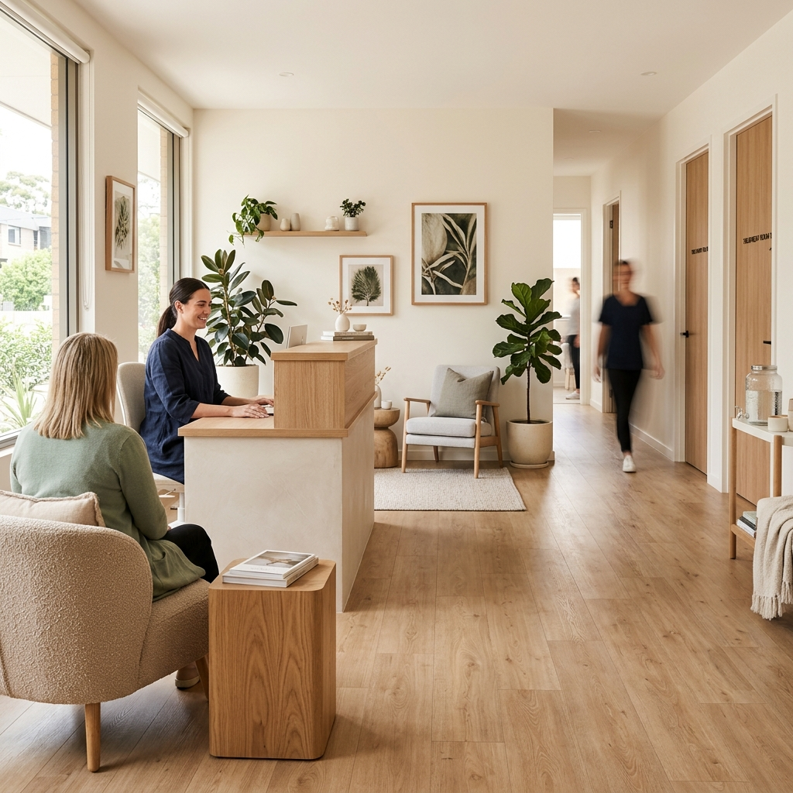

整形外科出身院長在籍

✦ 整形外科出身院長 荒川区荒川 ✦
適切な施術とわかりやすい説明で、患者様から信頼される接骨院。
保険施術から骨盤矯正・ラジオ波・酸素カプセル・フェイシャルまで一院でトータルケア。
WORRY
デスクワークで肩や首がガチガチ
朝起き上がる時に腰が痛くて辛い
骨盤のゆがみやO脚が気になる
交通事故後から首や背中に違和感がある
スポーツ中に捻挫・肉離れしてしまった
体のケアと一緒に美容・フェイシャルも気になる
それ、放っておくと悪化することがあります。まずは一度、ご相談ください。
REASON
整形外科での豊富な勤務経験を活かした確かな技術。解剖学に基づいた正確な診断で、「なぜ痛いのか」を丁寧にわかりやすく説明します。超音波診断装置（エコー検査）も完備し、骨折・疲労骨折の確認から関節軟骨の状態まで正確に診断します。
ボキボキしない安全な骨盤矯正・O脚矯正に加え、ラジオ波（フェイシャル・ボディ）・酸素カプセル・水素吸入・リンパケア・肩甲骨はがし・スポーツケアまで。副院長による美容アドバイスも付いています。
保険外施術は夜22時まで対応（要予約）。往診も可能です。交通事故は自賠責保険で窓口負担0円。時間外（8:00〜9:00 / 19:00〜22:00）対応・弁護士紹介・転院対応も万全です。
院長
DOCTOR
柔道整復師
「各症状に合わせた施術を丁寧に説明し、安心できる施術を行っています。」
整形外科での豊富な勤務経験を経て開院。保険施術から保険外施術まで幅広く対応し、交通事故・スポーツ外来にも専門的に対応しています。超音波診断装置（エコー検査）を活用した正確な診断と、患者様が納得できるわかりやすい説明を大切にしています。スポーツ選手の投球・バッティング・ランニングフォームのアドバイスも行っています。副院長による美容アドバイスも受けられます。
TREATMENT
骨折・脱臼・捻挫・打撲などのケガ、骨折・脱臼後のリハビリ、労災（負担金なし）に対応。健康保険・乳幼児・母子・障害助成制度すべて対応。
保険適用 / 初診¥300〜（負担割合による）
保険施術に追加できるオプションメニュー。
延長マッサージ ¥1,550 / ラジオ波（高周波）¥1,550 / 超音波 ¥300 / カッピング・吸玉 ¥1,550 / トリガーポイント施術 / エコー検査
各オプション追加料金
自賠責保険で窓口負担0円。施術費・交通費・休業損害（¥5,700〜/日）・慰謝料すべて保険対応。超音波診断（エコー）使用。時間外対応（8:00〜9:00 / 19:00〜22:00）・弁護士紹介・転院・併院も対応。
自賠責保険適用（無料）
ボキボキしない安全な矯正施術。自宅エクササイズ指導付き。子ども同伴OK。男女問わず対応。初回は約40〜60分、2回目以降は約20〜30分。週2〜3回→安定後週1〜2回が目安。
¥4,290/回（初検+¥1,000）・12回券 ¥42,900
痛みなし・個別対応・自宅エクササイズ指導付き。国家資格者による安全施術。解剖学・生理学・構造医学に基づいたアプローチ。副院長の美容アドバイス付き。
¥3,410/回（初検+¥1,000）・12回券 ¥34,100
肩こり・腰痛・首こり・背中痛に対応。手技＋高周波施術の組み合わせ。
初回 ¥5,980（約60分）
ショート(15分) ¥1,980 / ミドル(30分) ¥3,960 / ガッツリ(60分) ¥7,700（高周波・カッピング込み）
初回 ¥5,980〜
肩こり改善・可動域UP・姿勢改善・バストUP効果。硬くなった肩甲骨周囲の筋膜を丁寧にリリースします。
¥7,920
深部加温で表情筋を引き上げ。シミ・たるみ・むくみを改善。
単発 ¥6,600 / 月2回 ¥9,900
むくみ・たるみ改善（ラジオ波×高周波EMS&MCR）¥8,800
小顔リフトアップ（全機能+幹細胞パック）¥12,100
¥6,600〜
脂肪燃焼・引き締め・むくみ改善。
お腹引き締め：単発 ¥6,600 / 月2回 ¥12,100（脚浮腫除去オプション +¥1,650）
脚引き締め：単発 ¥9,900 / 月2回 ¥18,590
全身ラジオ波ケア：60分（後面）¥8,800 / 100分（前後面）¥15,400
¥6,600〜
高気圧酸素で疲労回復・パフォーマンス向上。
30分 ¥3,300 / 60分 ¥5,280 / 90分 ¥7,900
🎉 15周年キャンペーン中（〜2027年2月）：30分・60分 ¥1,500
¥3,300〜（キャンペーン¥1,500〜）
酸素カプセル＋水素吸入で相乗効果。ウォーターベッド・メドマー（下肢浮腫除去）が無料でついてきます。
酸素30分+水素30分 ¥7,050
酸素60分+水素60分 ¥9,030
¥7,050〜
試合前後のケア・筋疲労回復に。投球・バッティング・ランニングフォームのアドバイスも対応。エコー検査で疲労骨折予防・関節軟骨チェック可。試合前の時間外対応も可能な限り対応。
¥7,700（60分）
むくみ・リンパの流れを改善するリンパマッサージ。
下肢（50分）¥4,290
全身（70分）¥8,590
¥4,290〜
自律神経調節 ¥4,400
生理痛・排卵痛 ¥4,400〜
便秘・冷え性 ¥4,400
吸玉・カッピング ¥4,000〜
¥4,000〜
VOICE
「産後骨盤矯正に通って2〜3回目から歩く感覚が変わりました。姿勢を気にするようになって骨盤のしまりを自覚できました。体重も減りました。何でも答えてくれる先生で、技術が高く信頼できます。」
「交通事故後に全身が痛く、首のむち打ちも治りました。丁寧な治療で驚きました。事故に対する知識が豊富で心強かったです。保険の手続きもすべてサポートしてもらえました。」
「ラジオ波でお腹の脂肪がなくなり、ズボンがスムーズに履けるようになりました。顔のシミもなくなって妻に驚かれました。顔が細くなって若返った感じです。」
「フェイシャルを受けてシミがなくなりリフトアップしました。気持ちが良く、効果もあるので素晴らしいです。コスパも良かったです。」
「施術を受けてすごく良くなりました。パフォーマンスが上がりました。」
「4回程施術してもらったら、肘の痛みがなくなり投げられるようになりました。」
FAQ
骨折・脱臼・捻挫・打撲などの急性のケガには健康保険が適用されます。乳幼児・母子・障害・原爆医療助成制度にも対応。交通事故は自賠責保険、労災は労災保険が使えます。骨盤矯正・ラジオ波などは自由診療となります。
ボキボキしない矯正方法を採用しており、痛みはありません。初期は週2〜3回、安定後は週1〜2回が目安です。形状記憶理論により1〜3ヶ月での改善を目指します。初回は約40〜60分、2回目以降は約20〜30分です。
示談前の施術費は自賠責保険で全額カバーされ、窓口負担はありません。交通費（タクシー・ガソリン代等も領収書で請求可）・休業損害（¥5,700〜/日）・慰謝料も対応。弁護士紹介・転院・併院も可能です。時間外（8:00〜9:00 / 19:00〜22:00）も対応します。
子ども連れ歓迎です。骨粗しょう症など既往歴のある高齢者の骨盤矯正はご遠慮いただく場合があります。妊娠中は矯正は行いませんが、むくみ・腰痛のご相談は可能です。
はい、往診に対応しています。詳しくはお電話でご相談ください。
はい、スポーツ外来があります。エコー検査で疲労骨折予防や関節軟骨の状態確認も可能。投球・バッティング・ランニングフォームのアドバイスも行っています。試合前の時間外対応も可能な限り対応します。練習の休止を最小限にするよう指導します。
現金のみのお取り扱いです（クレジットカード不可）。保険施術は予約不要です。保険外施術・骨盤矯正・各種自由診療はお電話またはWEB予約（airrsv.net/kuroha）をご利用ください。
ACCESS
📍 〒116-0002 東京都荒川区荒川5-31-20
| 曜日 | 午前 | 午後 |
|---|---|---|
| 月〜金 | 9:00〜12:00 | 15:30〜19:00 |
| 土 | 9:00〜12:00 | — |
| 日・祝 | 休診（応相談） | |
| 曜日 | 時間帯 |
|---|---|
| 月〜金 | 12:15〜15:30 / 19:30〜22:00 |
| 土 | 12:30〜17:00 |
| 日・祝 | 応相談 |
酸素カプセルは 9:00〜21:00 対応
🚃 東京メトロ千代田線「町屋駅」
🚃 京成本線「新三河島駅」
🚃 都電荒川線「赤土小学校前駅」「町屋2丁目駅」
🅿️ 隣にコインパーキングあり（領収書で保険会社へ請求可）
📱 Instagram: @kuroha.sekkotsuin
📍
Google マップ
（実際のサイトにはマップが表示されます）
CONTACT
無料カウンセリング実施中。電話またはWEB予約・Webフォームからお気軽にどうぞ。